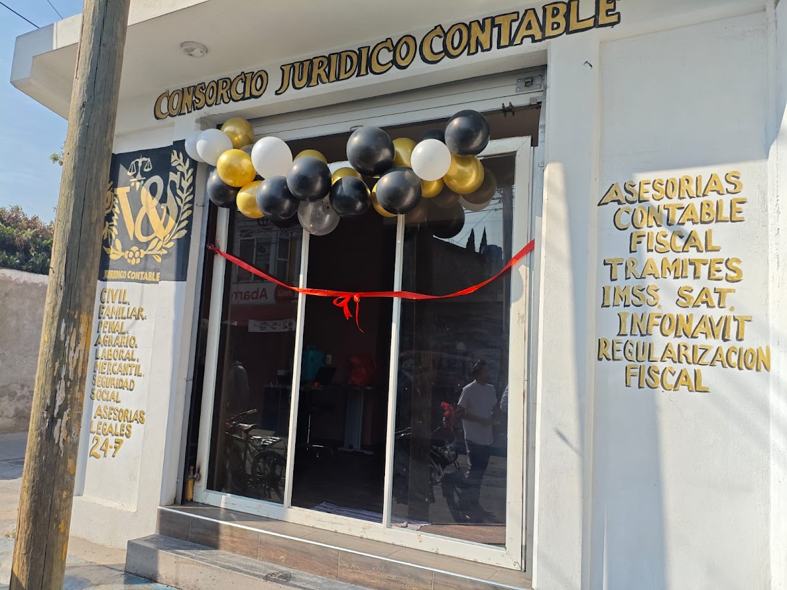

Abogados y contadores en un solo lugar: regularización fiscal ante el SAT, trámites IMSS e Infonavit, y asesoría en materia civil, familiar, penal, laboral, mercantil y agraria.

Servicios tomados del rótulo de la oficina (foto pública de la ficha de Google).
“Buen servicio y atención al cliente sobre todo por parte de la contadora Vanessa; su profesionalismo y compromiso ayudó a que me regularizara fiscalmente en el SAT.”
“Buena atención y lo mejor dan solución a tu necesidad, satisfecho y accesible sus costos.”
“He contado con sus servicios, y los trabajos los hacen con veracidad… 100% recomendable.”
“Muy recomendable, responsable y sobre todo muy buen servicio.”
“Muy buena la atención, el personal súper recomendable 💯%.”
“Excelente servicio, confiables, profesionales, 100% recomendable.”
Te atendemos las 24 horas. Escríbenos y recibe orientación hoy mismo.
💬 Escribir por WhatsApp